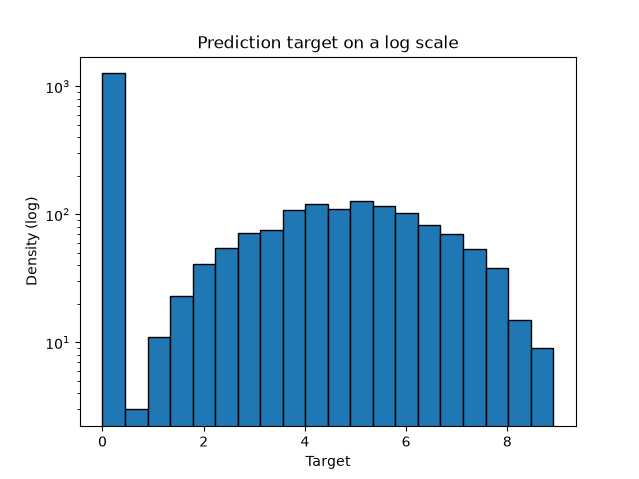
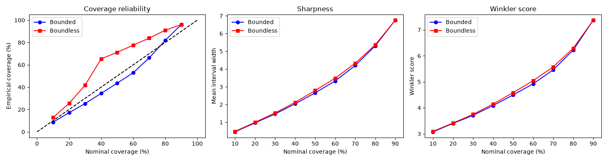
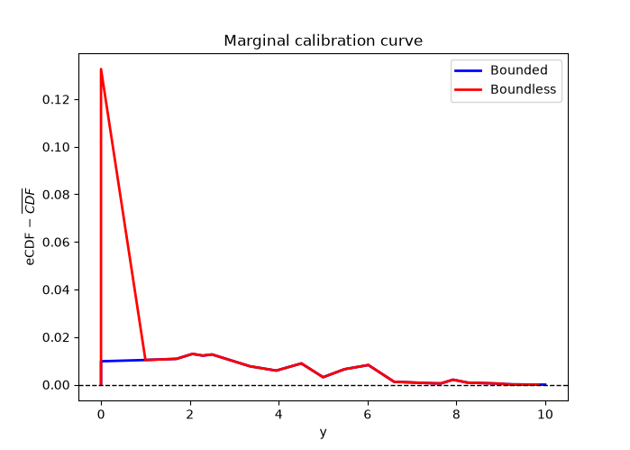
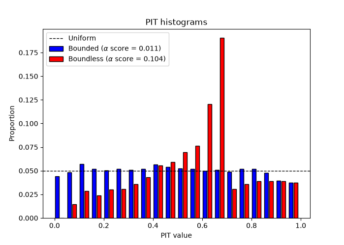

Advanced
Writing a custom mapper
OrdBoostRegressor accepts any custom mapper that inherits from BaseBinMapper.
In this example, we will show how to create a new mapper. A minimal mapper only
needs to implement the _intra_bin_points method that defines which points to add
between the bin edges and their associated weight.
Below is the simplest mapper to implement: the NullBinMapper. It does not add any
points to the grid. Therefore, the CDFs will only be evaluated at the bin edges.
NOTE: This mapper is equivalent to using the UniformBinMapper with n_points=0.
Once the new mapper has been defined, we can now use it when creating an OrdBoostRegressor:
Running this example should produce the following output:
Sample 0 median [95% PI]
2.76 [1.50 -- 3.10]
Sample 1 median [95% PI]
3.60 [3.12 -- 6.76]
Sample 2 median [95% PI]
4.44 [1.78 -- 5.15]
Sample 3 median [95% PI]
1.96 [1.41 -- 2.49]
Sample 4 median [95% PI]
2.98 [2.24 -- 3.92]
Full example:
Bounded data and atoms
This example demonstrates the use of the lower_bound and upper_bound attributes
with and whitout atoms. We will look at the effects these have on the model.
Let's start by generating some synthetic data. For this example, we want to include
a floor atom at y=0 (zero-inflation) and a ceiling bound at y=10 with no atom.
This means that the target values y can be 0, and they approach 10 without reaching.
We are creating 10,000 samples with 8 features. We then modify the target so that
it is bound between 0 and 10, and zero-inflated (roughly 50% of data at 0).
The code should generate the following figure showing the target test distribution:

NOTE: the target has a large amount of data at 0 and never reaches 10.
Now that the data has been generated, we can fit our models. First, we define some
bin edges that cover the 0 to 10 range. We then create two models, one with the
mapper_kwargs and one without. The models have identical hyperparameters and use
the quantile bin mapper. The first model defines four mapper_kwargs, the
lower_bound and upper_bound values are floats corresponding to the limits we
have imposed on the data. The floor_atom is set to True because there is data
at 0, however, the ceiling_atom is set to False because y never reaches 10.
Once the models have been created, we can fit them with the train data and generate the predictions and distributions.
Now let us evaluate the model to see the effects of the bounds and atoms. First, let us look at the accuracy and skill scores with the MAE, CRPS, and CRPSS for both models.
The code will generate the following table:
Both model exhibit similar performances, with the bounded model showing a marginal improvement over the boundless model (lower CRPS and MAE and higher CPRSS). Now let us take a look at the prediction intervals. We compute the interval coverage rate, the sharpness, and the Winkler score at difference significance levels and plot the results.
The code will generate the following results:

Now the difference between the bounded and boundless model becomes more apparent. The boundless model has too much coverage, the true value falls in the interval more often then expected. On the other hand, the bounded model has too little coverage. Both model have similar sharpness and Winkler scores.
Finally, let's look at the calibration. We will compute the PIT histograms and the marginal calibration curves for both models and plot the results.
The code will generate the following results:

The marginal calibration clearly shows a difference between the bounded and the boundless model near 0. This is exactly where the floor atom is located. Without the floor atom and lower bound set, the model is miscalibrated in that lower region. The upper bound also shows an effect however much weaker than at the floor.

The PIT histograms corroborate the results from the marginal calibration. The boundless model systematically underestimates the target values which creates a PIT histogram with a peak near 0.6 and \(\alpha\) score of 0.104. In contrast, the bounded model has PIT histogram that is near uniform and an \(\alpha\) score of 0.011, 10 times smaller.
These results clearly show the effects of using the atoms and bounds to constrain the models.
Full example:
| Bounds and atoms | |
|---|---|
1 2 3 4 5 6 7 8 9 10 11 12 13 14 15 16 17 18 19 20 21 22 23 24 25 26 27 28 29 30 31 32 33 34 35 36 37 38 39 40 41 42 43 44 45 46 47 48 49 50 51 52 53 54 55 56 57 58 59 60 61 62 63 64 65 66 67 68 69 70 71 72 73 74 75 76 77 78 79 80 81 82 83 84 85 86 87 88 89 90 91 92 93 94 95 96 97 98 99 100 101 102 103 104 105 106 107 108 109 110 111 112 113 114 115 116 117 118 119 120 121 122 123 124 125 126 127 128 129 130 131 132 133 134 135 136 137 138 139 140 141 142 143 144 145 146 147 148 149 150 151 152 153 154 155 156 157 158 159 160 161 162 163 164 165 166 167 168 169 170 171 172 173 174 175 176 177 178 179 180 181 182 183 184 185 186 187 188 189 190 191 192 193 194 195 196 197 198 199 200 201 202 203 204 205 206 207 208 209 210 211 212 213 214 215 216 217 218 219 220 221 222 223 224 225 226 227 228 229 230 231 232 233 234 235 236 237 238 239 240 241 242 243 244 245 246 247 248 249 250 251 252 253 254 | |